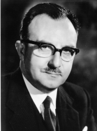

Please note: the AAS Obituaries are temporarily being hosted on this website while their full content is being ingested into the PubPub publishing platform newly adopted by the Bulletin of the American Astronomical Society. When the migration is complete, your existing links will take you to the final, migrated content. Contact peter.williams@aas.org with any questions.
William McCrea (1904-1999)
Sir William Hunter ('Bill') McCrea, doyen of British astronomy, held in respect and affection by all generations, died peacefully on April 25, at the age of 94. McCrea was born in Dublin, the eldest child of a schoolmaster. His parents were strict members of the Plymouth Brethren, but by the age of eighteen he had become a confirmed Anglican, a faith he retained all his life.
By 1907 the family had moved to Chesterfield, Derbyshire, where Bill attended first the Central (elementary) School and then the Grammar School, from which he won an entrance scholarship in Mathematics to Trinity College, Cambridge. He read for the Mathematics Tripos, becoming a Wrangler in 1926. He specialised in those branches of mathematical physics which were stimulating exciting research at Cambridge, and after graduating he began research as one of the many pupils of R.H. Fowler (to whom he paid warm tribute on his 1989 Centenary). Although initially he worked on basic problems in quantum physics and relativity, and also on related problems in pure mathematics, his interest gradually focused on the application of theoretical physics to the astronomical universe, ranging from the constitution of stellar atmospheres, through the formation of planets and stars, to cosmology, the study of the universe as a whole.
Recognition came early with a Cambridge University Rayleigh Prize, a Trinity College Rouse Ball Senior Studentship, a Sheepshanks Exhibition and an Isaac Newton Studentship. After spending the year 1928-29 as visitor in Goettingen, McCrea began his rapid rise up the regular academic ladder as Lecturer in the Edinburgh Department of Mathematics, headed by Edmund Whittaker, followed by four years as Reader at Imperial College, London. In 1936 he moved to Queen's University, Belfast as Professor of Mathematics. In 1943 he was given leave from Belfast while doing Operational Research in the Admiralty in the team led by Patrick M.S. Blackett. After VE-day in 1945, with the rank of Temporary Captain in the RNVR he had the task of interviewing German naval officers in Schleswig-Holstein. He in fact did not return to Belfast, as in 1944 he had been appointed Professor at Royal Holloway College, London, taking up the appointment at the end of the War. McCrea remained at Holloway till 1966, when he took up his last appointment as SRC-supported Research Professor of Theoretical Astronomy at the recently established University of Sussex. Shortly after the War, he had urged the setting-up of a national institute of theoretical astronomy. The subsequent rather tortuous negotiations led to the establishment of the Institute of Theoretical Astronomy in Cambridge (now united with the Cambridge Observatories to form the Institute of Astronomy), and a smaller Astronomy Center in Sussex, with McCrea as the first Research Professor and the late Roger Tayler as the first UGC-supported professor. With the enthusiastic support of the Astronomer Royal, Sir Richard Woolley, and the other senior staff at the Royal Greenwich Observatory, McCrea and Tayler jointly put Sussex on to the world Astronomy map. McCrea was a versatile astrophysicist. Many of his papers have had a permanent effect on the way subsequent workers have formulated the various problems under discussion. He was an early advocate of the now-accepted view that stars should have a high hydrogen content. He pioneered study of the formation in dusty interstellar clouds of the hydrogen molecule, a crucial cooling agent, and of other molecules, and gave an elegant treatment of the way such clouds, when externally compressed, can reach densities high enough for gravitational collapse to ensue, leading possibly to break-up into stars.
His other contributions to cosmical gas dynamics included a proposal for turbulent support for the solar chromosphere, and detailed studies of the gravitational accretion of interstellar gas by already formed stars; though like many of his generation, he was slow to appreciate the importance of electromagnetic processes in astronomy. Concerning relativity theory, he vigorously rebutted misunderstandings of the so-called 'twin paradox' that persisted in reappearing in the literature. He also pointed out that the cosmical constant that appears in Einstein's modified version of general relativity can be interpreted as the energy density of the vacuum. Together with Edward A. Milne he showed that the various cosmological models emerging from Einstein's theory have simply understood Newtonian analogues. When evolutionary cosmology appeared to face observational difficulties, he showed a commendable flexibility of mind (a quality not always visible in members of the scientific Establishment) in his taking seriously the alternative steady-state theory, proposed by Hermann Bondi, Thomas Gold and Fred Hoyle, and in fact showed how the model could be treated within the mathematical framework of general relativity; but he later accepted that, at least in its original form, the theory could no longer hold up against the accumulating evidence from optical and radio observations. In his later years, he expressed scepticism about the feasibility of the whole cosmological enterprise.
In addition to his many papers and reviews, McCrea wrote the texts Relativity Physics, Analytical Geometry of Three Dimensions, the less technical Physics of the Sun and Stars, and together with Tayler, the second volume of the History of the Royal Astronomical Society. Like Tayler, his services to astronomy went far beyond his technical contributions. He was successively Council member, Secretary, President, Foreign Correspondent and Treasurer of the RAS, and for some years he was editor of Observatory and of the RAS Monthly Notices. He served on the Councils of the Royal Society, of the London Mathematical Society, and of the Royal Institute of Philosophy.
He also gave public service as a school governor. McCrea received many invitations to visit, from all over the world. He was a bye-Fellow at Caius College, Cambridge, and visiting professor or lecturer at Berkeley, the Case Institute at Cleveland, UBC at Vancouver, Louvain, Cairo, Istanbul, Otago, among others. Further recognition came with honorary degrees from the National University of Ireland, Queen's University at Belfast, the National University at Cordoba, Argentina, and the Universities of Dublin and Sussex; and he was Member of the Akademia Leopoldina, and Foreign Member of the Turin Academy of Sciences. He was elected to the Royal Society in 1952. He was a kindly, slightly shy man, but with hidden reserves of strength, remaining intellectually active well into his nineties. His somewhat formal manner was rather misleading; he was in fact a gregarious figure, especially committed to the RAS and the RS Dining Clubs.
He will be mourned world-wide by colleagues and friends, and not least by former undergraduate and graduate students, who recall with gratitude his help and warm encouragement.
William Hunter McCrea, mathematician and astrophysicist; born Dublin 13 December 1904; Professor of Mathematics, Queen's University, Belfast 1936-44; Royal Holloway College, University of London 1944-66; Research Professor of Theoretical Astronomy, University of Sussex 1966-72 (Emeritus 1972-99); FRSE 1931; FRS 1952; President, Royal Astronomical Society 1961-63; RAS Gold Medallist 1976; Knight Bachelor 1985; married 1933 Marian Nicol Core Webster (d. 1995), one son, two daughters; died Lewes 25 April 1999.
Photo (Sir William McCrea's official portrait as President of the Royal Astronomical Society, 1961-1963.) courtesy of the Royal Astronomical Society, London.
Obituary written by: Leon Mestel (Sussex University, UK)
BAAS Citation: BAAS, 1999, 31, 1605
SAO/NASA ADS Bibcode: 1999BAAS...31.1605M